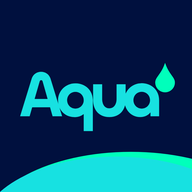

App para Android · grátis
A água na câmera do celular
Fotografe a fita de teste 4 em 1 ou a própria água, do rio ou num copo, e veja na hora se ela está dentro dos padrões.

Aqua
Versão 1.2 · 2 MB · Android 6 ou mais novo
No iPhone o app não instala. O Aqua funciona igualzinho pelo navegador: toque em “Usar no navegador”.
Você já está no app Aqua. Não precisa baixar de novo.
Baixar o Aqua Usar no navegador, sem instalarO app precisa de internet para funcionar.
-
Fita de teste 4 em 1Cloro livre, alcalinidade, pH e dureza total lidos pelas cores da fita.
-
Água diretaDo rio, no copo de lado ou de cima: o app acha a água na foto e separa do fundo.
-
Resultado na horaComparação com a cartela de cor, do barro à água limpa, e o que fazer em cada caso.
Como instalar
Leva menos de um minuto. Faça pelo celular Android.
- Toque em “Baixar o Aqua”Se o navegador perguntar, toque em “Baixar mesmo assim”.
- Abra o arquivo Aqua.apkPela notificação do download ou pela pasta Downloads.
- Permita a instalaçãoSe o celular pedir, ative “Permitir desta fonte” e volte.
- Se aparecer o aviso do Play ProtectToque em “Mais detalhes” e depois em “Instalar mesmo assim”.
- Abra o AquaNa primeira vez que usar a câmera, toque em “Permitir”.
- Já tem o Aqua?Baixe e instale de novo: a versão nova entra por cima da antiga.
Por que aparece aviso? O Aqua é um projeto escolar e não está na Play Store. O Android avisa sobre todo app instalado de fora da loja, mesmo os seguros.
Baixe pelo código
Está no computador ou quer passar para um colega? Aponte a câmera do celular para o código e baixe direto nele.
Ou digite: inversetv.github.io/aqua/baixar.html